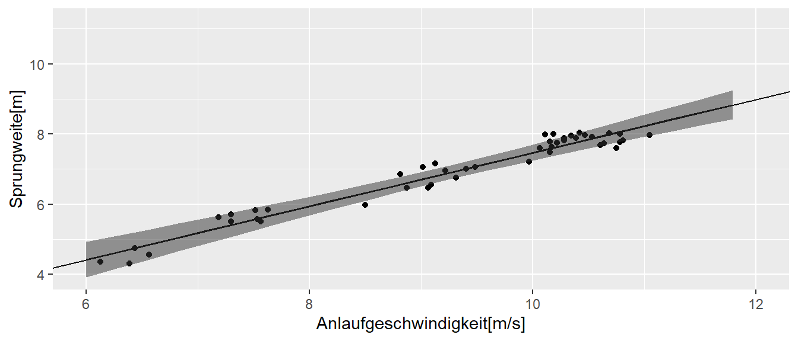

15 Vorhersage
15.1 Vorhergesagte Werte \(\hat{y}_i\)
Wenn ein einfaches lineares Modell gefittet wurde, ist eine zentrale Fragestellung welche Vorhersagen anhand des Modells getroffen werden können. Wir hatten schon vorher gesehen, dass Vorhersagen mittels eines hats über der Variable angezeigt werden. Beim einfachen linearen Regressionmodell liegen die vorhergesagten Werte \(\hat{y}_i\) auf der berechneten Regressionsgerade. Da die Regressionsgerade anhand des Modells berechnet wird, berechnet sich der Werte \(\hat{y}_i\) für einen gegeben \(x\)-Wert nach.
\[\begin{equation} \hat{y} = \hat{\beta_0} + \hat{\beta_0} x \end{equation}\]
Wie schon mehrfach besprochen ist die Regressionsgerade inherent unsicher. Wir haben Unsicherheiten bezüglich der geschätzen Modellkoeffizienten \(\hat{\beta}_0\) und \(\hat{\beta}_1\) und diese Unsicherheit überträgt sich daher auf die geschätzen Werte \(\hat{y}_i\). Dies Unsicherheit muss daher bei deren Interpretation der Werte berücksichtigt werden.
15.1.1 Berechnung von \(\hat{y}_i\) in R
In Abbildung 15.1 sind die bereits behandelten Sprungdaten gegen die Anlaufgeschwindigkeiten zusammen mit der Regressionsgeraden und vorhergesagten Werten (rot) abgetragen.
In R können die vorhergesagten Werte des mittels lm() gefitteten Modells mit der Hilfsfunktion predict() bestimmt werden. Wenn der Funktion predict() keine weiteren Parameter außer dem lm-Objekt übergeben werden, berechnet predict() die vorhergesagten Werte \(\hat{y}_i\) für alle die \(x\)-Werte die auch zum fitten des Modells benutzt wurden. Die Reihenfolge der Werte \(\hat{y}_i\) enspricht dabei den Werten im Original-data.frame().
predict(mod)[1:5] 1 2 3 4 5
4.523537 4.725140 4.856256 4.761778 5.416207 Der Übersicht halber haben uns nur die ersten fünf Werte ausgeben lassen. Als kleine Anwendung, können wir mittels predict() die Residuen auch von Hand ohne die resid()-Funktion berechnen.
(jump$jump_m - predict(mod))[1:5] 1 2 3 4 5
-0.16267721 -0.41248842 -0.29359256 -0.01047071 0.09927500 resid(mod)[1:5] 1 2 3 4 5
-0.16267721 -0.41248842 -0.29359256 -0.01047071 0.09927500 Meistens liegt das Interesse jedoch weniger auf den vorhergesagten Werten \(\hat{y}_i\) für die gemessenen Werte, sondern es sollen Werte vorhergesagt werden für \(x\)-Werte die nicht im Datensatz enthalten sind. Operational ändert sich nichts, es wird immer noch das gefittete Modell verwendetet und es müssen lediglich neue \(x\)-Werte übergeben werden.
In R kann dies mittels des zweite Parameter in predict() erreicht werden. Soll zum Beispiel die Sprungweite für eine Anlaufgeschwindigkeit von \(v = 11.5[m/s]\) berechnen werden, muss zunächst ein neues tibble() erstellt werden, welches den gewünschten \(x\)-Wert enthält. Dabei muss der Spaltenname in dem neuen tibble() demjenigen im Original-tibble() entsprechen. Ansonsten funktioniert die Anwendung von predict() nicht.
df <- tibble(v_ms = 11.5)
df# A tibble: 1 × 1
v_ms
<dbl>
1 11.5Dieses tibble() kann nun zusammen mit dem lm()-Objekt an predict() übergeben werden.
predict(mod, newdata = df) 1
8.614136 D.h., bei einer Anlaufgeschwindigkeit von \(v = 11.5[m/s]\) ist anhand des Modells eine Sprungweite von \(8.6m\) zu erwarten.
15.2 Unsicherheit in der Vorhersage
Wie schon angesprochen ist unser Modell mit Unsicherheiten behaftet. Diese drücken sich in den Standardfehler für die beiden Koeffizienten \(\hat{\beta_0}\) und \(\hat{\beta_1}\) aus (siehe Tabelle 15.1).
| Schätzer | \(s_e\) | |
|---|---|---|
| (Intercept) | -0.14 | 0.23 |
| v_ms | 0.76 | 0.02 |
Der vorhergesagte Wert \(\hat{y}\) ist daher für sich alleine ist noch nicht brauchbar, da auch Informationen über dessen Unsicherheit notwendig sind um die Ergebnisse korrekt zu interpretieren.
Es können zwei unterschiedliche Anwendungsfälle voneinander unterschieden werden.
- Der mittlere, erwartete Wert \(\hat{\bar{y}}_{neu}\) (auch \(\hat{E}[y|x]\))
- Die Vorhersage eines einzelnen Wertes \(\bar{y}_{neu}\)
Im konkreten Fall werden damit zwei unterschiedliche Fragestellungen beantwortet. Im 1. Fall lautet die Frage, ich habe eine Trainingsgruppe und möchte wissen was der mittlere Wert der Gruppe anhand des Modells ist, wenn alle eine bestimmte Anlaufgeschwindigkeit \(v_{neu}\) haben. Im 2. Fall lautet die Frage welche Weite eine einzelne Athletin für die Anlaufgeschwindigkeit \(v_{neu}\) springen sollte. In beiden Fällen werden die Athleten nicht genau den Wert des Regressionsmodells treffen. Heuristisch können wir aber einsehen, dass im 1. Fall der Gruppenvorhersage die auftretenden Streuungen nach oben bzw. nach unten sich gegenseitig im Schnitt ausbalancieren sollten. Im 2. Fall der einzelnen Athletin ist dies nicht der Fall. Daher ist die Vorhersage im 2. Fall mit einer höhere Unsicherheit behatete. Diese Unterschied sollte sich dementsprechend in den Varianzen der beiden Vorhersagen wiederspiegeln.
Der vorhergesagte Wert \(\hat{y}_{neu}\) ist in beiden Fällen gleich und entspricht der oben beschriebenen Methode anhand des Modell \(y_{neu} = \hat{\beta}_0 + \hat{\beta}_1 \times x_{\text{neu}}\).
Die Varianz für den ersten Fall, für den erwarteten Mittelwert errechnet nach:
\[\begin{equation} Var(\hat{\bar{y}}_{neu}) = \hat{\sigma}^2 \left[\frac{1}{n} + \frac{(x_{neu} - \bar{x})^2}{\sum(x_i - \bar{x})^2}\right] = \hat{\sigma}_{\hat{\bar{y}}_{neu}}^2 \label{eq-slm-pred-hatbary} \end{equation}\]
Das dazugehörige Konfidenzintervall errechnet sich mittels:
\[\begin{equation} \hat{\bar{y}}_{neu} \pm q_{t(1-\alpha/2;n-2)} \times \hat{\sigma}_{\hat{\bar{y}}_{neu}} \end{equation}\]
Die Varianz für die Vorhersage eines einzelnen Wertes errechnet sich dagegen nach:
\[\begin{equation} Var(\hat{y}_{neu}) = \hat{\sigma}^2 \left[1 + \frac{1}{n} + \frac{(x_{neu} - \bar{x})^2}{\sum(x_i - \bar{x})^2}\right] = \hat{\sigma}^2 + \hat{\sigma}_{\hat{\bar{y}}_{neu}}^2 = \hat{\sigma}_{\hat{y}_{neu}}^2 \label{eq-slm-pred-haty} \end{equation}\]
In Formel \(\eqref{eq-slm-pred-haty}\) sehen wir, dass sich die Varianz für einen einezelnen vorhergesagten Wert \(\hat{y}\) aus zwei Komponenten zusammensetzt. Einmal die Varianz aufgrund des vorhgesagten Mittelwerts und zusätzlich die Varianz auf Grund des Modells \(\sigma^2\). Insgesamt für das zu dem folgenden Konfidenzintervall:
\[\begin{equation} \hat{y}_{neu} \pm q_{t(1-\alpha/2;n-2)} \times \hat{\sigma}_{\hat{y}_{neu}} \end{equation}\]
Da wir \(\sigma^2\) in den seltensten Fällen kennen, sondern ebenfalls anhand der Daten schätzen, wird der bereits besprochene Schätzer \(\hat{\sigma}^2 = MSE\) verwendet.
In beiden Berechnungen (Formeln \(\eqref{eq-slm-pred-haty}\) und \(\eqref{eq-slm-pred-hatbary}\)) ist der folgende Term enthalten:
\[ \frac{(x_{neu} - \bar{x})^2}{\sum(x_i - \bar{x})^2} \]
enthalten. Anhand des Zählers kann abgeleitet werden, dass die Unsicherheit der Vorhersage mit dem Abstand vom Mittelwert der \(x\)-Werte zunimmt. Rein heuristisch macht dies Sinn, da davon ausgegangen werden kann, dass um den Mittelwert der \(x\)-Werte auch die meiste Information über \(y\) vorhanden ist und dementsprechend umso weiter die Werte sich vom \(\bar{x}\) entfernen die Information abnimmt. Im Nenner ist wiederum wie auch beim Standardfehler \(\sigma_{\beta_1}\) des Steigungskoeffizienten \(\beta_1\) zu sehen, dass die Varianz abnimmt mit der Streuung der \(x\)-Werte. Daher, wenn eine Vorhersage in einem bestimmten Bereich von \(x\)-Werten durchgeführt werden soll, dann sollte darauf geachtet werden möglichst diesen Bereich auch zu samplen um die Unsicherheit so klein wie möglich zu halten.
15.2.1 Vorhersagen in R mit predict() (continued)
In R kann die Art des Konfidenzintervalls für die Vorhersage mittels des dritten Arguments zu predict() bestimmt werden. Dabei steht confidence für das Konfidenzintervall der mitteleren Vorhersage und prediction für das Konfidenzintervall eines einzelnen Wertes.
15.2.1.1 Erwarteter Mittelwert
df <- data.frame(v_ms = 11.5) # oder tibble(v_ms = 11.5)
predict(mod, newdata = df, interval = 'confidence') fit lwr upr
1 8.614136 8.482039 8.74623415.2.1.2 Individuelle Werte
predict(mod, newdata = df, interval = 'prediction') fit lwr upr
1 8.614136 8.118445 9.109827Wir sehen hier, das das Konfidenzintervall, wie erwartet für den individuellen Wert \(\hat{y}\) weiter ist, als das Konfidenzband für den mittleren Wert \(\hat{\bar{y}}\).
15.2.2 Konfidenzband für die Regressiongerade
In oftmals ist auch ein Konfidenzband für die gesamte Regressiongerade von Interesse. In diesem Fall kann das Konfidenzband über die folgende Formel nach der Working-Hotelling-Methode abgeschätzt werden.
\[\begin{equation} \bar{Y} \pm W \sigma_{\hat{\bar{Y}}_{new}} \label{eq-slm-pred-hotelling} \end{equation}\]
Mit \(W^2 = 2 F(1-\alpha,2, n-2)\), wobei \(F(1-\alpha,2,n-2)\) die Quartile der \(F\)-Verteilung mit \(df_1 = 2\) bzw. \(df_2 = n-2\) Freiheitsgraden ist.
In Abbildung 15.2 ist das Konfidenzband nach Formel \(\eqref{eq-slm-pred-hotelling}\) abgetragen.

Wir können sehen, das das Konfidenzband für Band gegen Ende der Werte breiter wird. Insbesondere wenn die Vorhersage außerhalb des Bereichs der beobachteten Daten geht, wird die Unsicherheit und damit das Band breiter.
Weiterführende Informationen findet ihr beispielsweise in (Kutner u. a. 2005, 52ff).
15.3 Die Modellgüte beurteilen
15.3.1 Root-mean-square \(\hat{\sigma}^2\)
Wie wir bereits bei der betrachtung von Vorhersagen gesehen haben, ist die Verbundene Unsicherheit ursächlich in den Formeln \(\eqref{eq-slm-pred-haty}\) und \(\eqref{eq-slm-pred-hatbary}\) von der Residualvarianz \(\sigma^2\) bzw. derem Schätzer \(\hat{\sigma}^2 = MSE\) abhängig. Daher kann dieser Wert, der auch als Standardschätzfehler bezeichnet wird, auch direkt als ein Kriterium der Modellgüte interpretiert werden. Insbesondere die Wurzel aus diesem Wert kann direkt interpretiert werden, da sie die gleichen Einheiten wie die abhängige Variable \(y\) besitzt. Dabei ist weniger die absolute Höhe der Residualsvarianz von Interesse sondern immer in Bezug auf die konkrete Fragestellung.
Im vorliegenden Fall haben wir beispielsweise für das Sprungbeispiel \(\hat{\sigma} = 0.24\) beobachtet. D.h. im Mittel liegen unser Modell knapp einen viertel Meter daneben. Ob eine derart große Abweichung das Modell unbrauchbar bei der Entscheidungsfindung ist, ist keine Entscheidung die über die Statistik getroffen werden kann, sondern diese Entscheidung muss durch die Anwenderin des Modell getroffen werden.
15.3.1.1 Root-mean in R
In R können wir den Standardschätzfehler mittels der sigma()-Funktion bestimmen.
sigma(mod)[1] 0.2369055Der Wert wird auch bei der summary()-Funktion ausgegeben.
summary(mod)
Call:
lm(formula = jump_m ~ v_ms, data = jump)
Residuals:
Min 1Q Median 3Q Max
-0.44314 -0.22564 0.02678 0.19638 0.42148
Coefficients:
Estimate Std. Error t value Pr(>|t|)
(Intercept) -0.13854 0.23261 -0.596 0.555
v_ms 0.76110 0.02479 30.702 <2e-16 ***
---
Signif. codes: 0 '***' 0.001 '**' 0.01 '*' 0.05 '.' 0.1 ' ' 1
Residual standard error: 0.2369 on 43 degrees of freedom
Multiple R-squared: 0.9564, Adjusted R-squared: 0.9554
F-statistic: 942.6 on 1 and 43 DF, p-value: < 2.2e-1615.3.2 Der Determinationskoeffizient \(R^2\) als Maß für die Modellgüte
Im Folgenden schauen wir uns noch einen weiteren Parameter an um die Modellgüte zu beurteilen. Fangen wir dazu mit einem einfachen Modell mit nur vier Datenpunkten an.
| x | y |
|---|---|
| 0 | 1.26 |
| 1 | 3.29 |
| 2 | 2.52 |
| 3 | 3.04 |
In Abbildung 15.3 ist die Regressionsgerade und die vier Datenpunkte abgebildet.
Schauen wir uns nun noch einmal die möglichen Abweichung im einfachen Regressionmodells an.
Als erste Abweichung definieren wir die Gesamtvarianz \(SSTO\) (siehe Formel \(\eqref{eq-slm-pred-sstot}\)).
\[\begin{equation} SSTO := \sum_{i=1}^N (y_i - \bar{y})^2 \label{eq-slm-pred-sstot} \end{equation}\]
D.h. die Gesamtvarianz berechnet sich als die quadrierten Abweichungen der \(y_i\)-Werte vom Gesamtmittelwert \(\bar{y}\).
Die zweite Regressionkomponenten ist die sogenannte Regressionsvarianz \(SSR\). Diese ist definiert nach Formel \(\eqref{eq-slm-pred-ssreg}\):
\[\begin{equation} SSR :=\sum_{i=1}^N(\hat{y}_i - \bar{y})^2 \label{eq-slm-pred-ssreg} \end{equation}\]
Die Regressionsvarianz wird als die Summe der quadrierte Abweichungen der \(y_i\)-Werte vom Gesamtmittelwert \(\bar{y}\).
Als letzte Abweichung haben wir dann noch die uns bereits bekannte Residualvarianz \(SSE\) (siehe Formel \(\eqref{eq-slm-pred-ssres}\)).
\[\begin{equation} SSE := \sum_{i=1}^N (y_i - \hat{y}_i)^2 \label{eq-slm-pred-ssres} \end{equation}\]
In Abbildung 15.4 sind die drei verschiedenen Abweichung noch einmal graphisch dargestellt.
Wir sehen anhand der Pfeile in Abbildung 15.4 das ein additiver Zusammenhang zwischen den Abweichungen besteht. Der blaue Pfeil setzt sich aus der Addition zwischen dem grünen und dem grauen Pfeil zusammen. Rein algebraisch gilt ebenfalls:
\[\begin{equation*} y_i - \bar{y} = y_i - \hat{y}_i + \hat{y}_i - \bar{y} = (y_i - \hat{y}_i) + (\hat{y}_i - \bar{y}) \end{equation*}\]
Tatsächlich lässt sich zeigen, dass dieser Zusammenhang auch für die Summe der quadrierten Abweichung gilt.
\[\begin{equation} SSTO = SSR + SSE \end{equation}\]
D.h. die Gesamtvarianz setzt sich aus zwei verschiedenen Komponenten zusammen. Einmal der Teil der Varianz der anhand des Modells erklärt werden kann (\(SSR\)) und derjenige Teil der nicht anhand des Modells erklärt werden kann (\(SSE\)).
Aus diesem Zusammenhang lässt sich eine Metrik erstellen um die Modellgüte zu beurteilen. Schauen wir uns dazu an, was passiert wenn wir einen perfekten Zusammenhang zwischen der \(X\) und \(Y\)-Variablen haben. In Abbildung 15.5 ist ein solcher Zusammenhang abgebildet.
In diesem Fall, liegen die beobachteten Werte \(y_i\) genau auf der Regressionsgeraden. D.h. die Abweichungen \(y_i - \hat{y}_i = 0\) und damit \(SSE = 0\). Bereichnen wir nun des Verhältnis von \(SSR\) zu \(SSTO\) dann erhalten wir.
\[\begin{equation} \frac{SSR}{SSTO} = 1 \end{equation}\]
In Abbildung 15.6 ist das gegenteilige Beispiel abgebildet. Es besteht keine Zusammenhang zwischen der \(x\) und \(y\)-Variable.
In Abbildung 15.6 ist das gegenteilige Beispiel abgebildet. Es besteht keine Zusammenhang zwischen der \(x\) und \(y\)-Variable.
In diesem Fall hat die Regressiongerade die Steigung \(\beta_1 = 0\) und der \(y\)-Achsenabschnitt geht durch den Mittelwert \(\bar{y}\) der \(y\)-Werte. Für die Abweichungen resultiert daraus, dass nun \(\hat{y}_i - \bar{y} = 0\) und somit \(SSR = 0\) gilt
Bilden wir wieder das Verhältnis von \(SSR\) zu \(SSTO\) dann erhalten wir:
\[\begin{equation*} \frac{SSR}{SSTO} = 0 \end{equation*}\]
Insgesamt zeigen diese beiden Beispiel das wir mittels des Verhältnisses von \(SSR\) zu \(SSTO\) eine Metrik erhalten die wiedergibt wie gut die \(x\) und \(y\)-Variablen einen linearen Zusammenhang aufweisen. Das Verhältnis wird als Determinationskoeffizient \(R^2\) bezeichnet. Die Metrik ist beschränkt auf Werte zwischen \(0\) und \(1\) wobei wie wir gesehen bei \(R^2 = 0\) kein Zusammenhang besteht während bei \(R^2 = 1\) ein perfekter Zusammenhang besteht. Insgesamt gilt:
\[\begin{equation} R^2 = \frac{SSR}{SSTO} = 1 - \frac{SSE}{SSTO} \in [0,1] \label{eq-slm-pred-rsquared} \end{equation}\]
Es besteht auch ein enger Zusammenhang zwischen dem Determinationskoeffizienten \(R^2\) und dem Korrelationskoeffizienten \(r_{xy} = \pm\sqrt{R^2}\). Dieser Zusammenhang gilt allerdings nur für die einfache lineare Regression und gilt nicht mehr bei der multiplen Regression die wir später kennenlernen werden.
Im Zusammenhang mit dem Determinationskoeffizienten \(R^2\) gilt es auf ein Missverständnis hinzuweisen. Ein hoher \(R^2\) zeigt nicht an, dass präzise Vorhersagen mittels des Modells getroffen werden. Der Determinationskoeffzient bestimmt nur die relative Reduktion der Varianz an nicht die Absolute. Ob ein Modell nützlich zur Prädiktion ist, hängt wie oben besprochen sehr eng mit dem absoluten Höhe der Residualvarianz zusammen.
Im Zusammenhang mit der multiplen Regression gibt es auch noch einen korrigierten Determinationskoeffizient \(R_a^2\) bei dem ein penalty term auf Grund der Anzahl der Prädiktoren \(X_i\) eingefügt wird.
\[\begin{equation} R_a^2 = 1 - \frac{\frac{SSE}{n-p}}{\frac{SSTO}{n-1}} = 1 - \frac{n-1}{n-p}\frac{SSE}{SSTO} \label{eq-slm-pres-rsquaredadj} \end{equation}\]
15.3.2.1 Determinationskoeffizient \(R^2\) in R
In R erhalten wir den Determinationskoeffizienten über die summary()-Funktion. In unserem Beispiel zum Weitsprung erhalten wir beispielsweise:
summary(mod)
Call:
lm(formula = jump_m ~ v_ms, data = jump)
Residuals:
Min 1Q Median 3Q Max
-0.44314 -0.22564 0.02678 0.19638 0.42148
Coefficients:
Estimate Std. Error t value Pr(>|t|)
(Intercept) -0.13854 0.23261 -0.596 0.555
v_ms 0.76110 0.02479 30.702 <2e-16 ***
---
Signif. codes: 0 '***' 0.001 '**' 0.01 '*' 0.05 '.' 0.1 ' ' 1
Residual standard error: 0.2369 on 43 degrees of freedom
Multiple R-squared: 0.9564, Adjusted R-squared: 0.9554
F-statistic: 942.6 on 1 and 43 DF, p-value: < 2.2e-16D.h. es wurde ein sehr guter Modellfit bezüglich eines linearen Zusammenhang zwischen der Anlaufgeschwindigkeit und der Sprungweite mit \(R^2 = 0.96\) gefunden. Hier haben wir aber auch direkt den Fall, dass wir ein hohes \(R^2\) beobachten aber die absolute Varianz trotzdem relativ hoch ist.